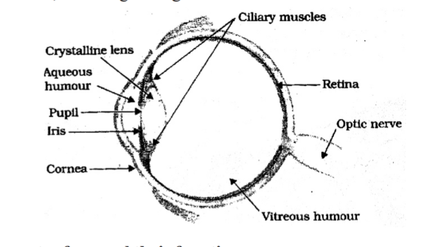
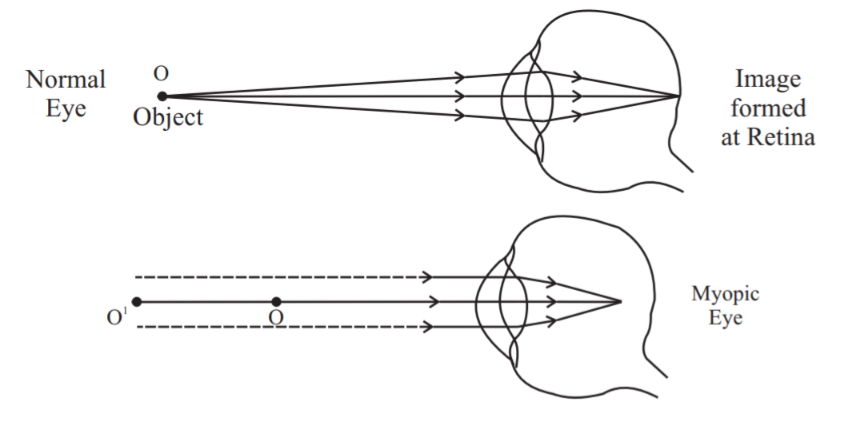
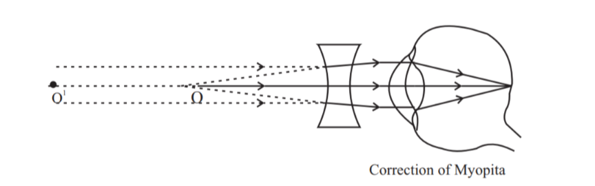
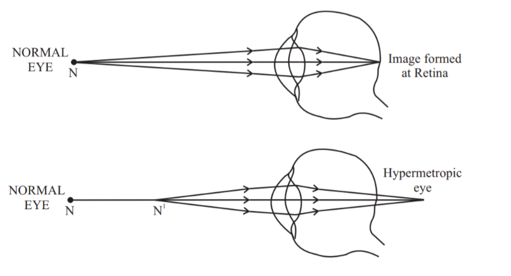
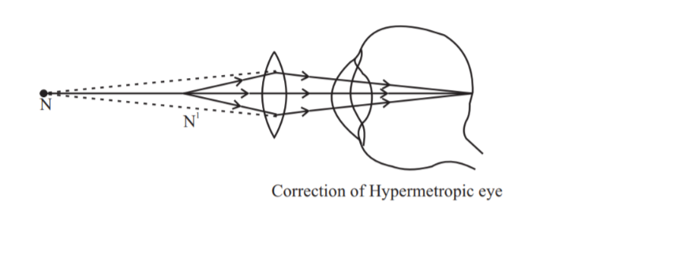
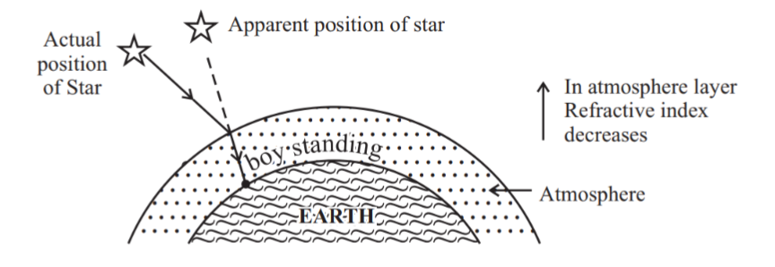
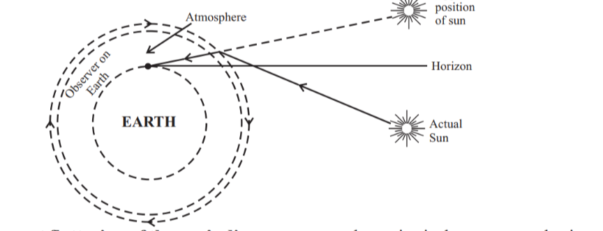
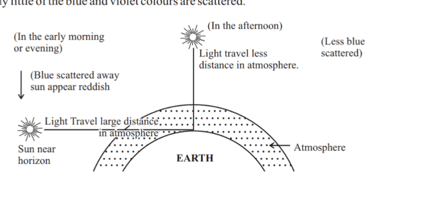

यह एक संवेदनशील ज्ञानेंद्रिय है। यह कैमरे की तरह कार्य करती है, जिससे हम अपने आस-पास के परिवेश का रंगीन चित्र देख पाते हैं।
यह प्रकाश के प्रति संवेदनशील पृष्ठ रेटिना पर एक उल्टा, वास्तविक प्रतिबिंब बनाता है।

नेत्र के विभिन्न भाग और उनके कार्य
- कॉर्निया (Cornea) : यह एक पतली झिल्ली है जिसके माध्यम से प्रकाश नेत्र में प्रवेश करता है। यह नेत्रगोलक के सामने पारदर्शी उभार बनाती है। अधिकांश अपवर्तन कॉर्निया की बाहरी सतह पर होता है।
- नेत्रगोलक (Eyeball) : यह लगभग गोलाकार होता है, जिसका व्यास लगभग 2.3 सेमी होता है।
- आइरिस (Iris) : यह एक गहरे रंग का पेशीय पर्दा है जो पुतली के आकार को नियंत्रित करता है। यह कॉर्निया के पीछे स्थित होता है।
- पुतली (Pupil) : यह नेत्र में प्रवेश करने वाले प्रकाश की मात्रा को नियमित और नियंत्रित करती है। यह जलीय द्रव तथा लेंस के बीच का काला छिद्र है।
- क्रिस्टलीय नेत्र लेंस (Crystalline eye lens) : यह वस्तु का केंद्रित, वास्तविक तथा उल्टा प्रतिबिंब रेटिना पर बनाता है। यह रेशेदार, जेली जैसे पदार्थ से बना होता है। यह एक उत्तल लेंस है जो प्रकाश को रेटिना पर अभिसरित करता है।
- सिलियरी पेशियाँ (Ciliary muscles) : यह नेत्र लेंस की वक्रता बदलने में सहायता करती हैं और इस प्रकार इसकी फोकस दूरी बदलती है ताकि हम विभिन्न दूरी पर रखी वस्तुओं को स्पष्ट रूप से देख सकें।
- रेटिना (Retina) : यह बड़ी संख्या में संवेदनशील कोशिकाओं वाली एक पतली झिल्ली है।
(i) कॉर्निया, (ii) आइरिस, (iii) पुतली, (iv) रेटिना।
- कॉर्निया - नेत्र पर पड़ने वाली प्रकाश किरणों का अपवर्तन इसकी बाहरी सतह पर होता है।
- आइरिस - पुतली के आकार को नियंत्रित करती है।
- पुतली - नेत्र में प्रवेश करने वाले प्रकाश की मात्रा को नियमित तथा नियंत्रित करती है।
- रेटिना - वस्तु का प्रतिबिंब प्राप्त करने के लिए पर्दे का कार्य करती है और विद्युत संकेत उत्पन्न करती है जो प्रकाशिक तंत्रिकाओं (optic nerves) द्वारा मस्तिष्क को भेजे जाते हैं।
वास्तविक तथा उल्टा।
नेत्र की पुतली एक परिवर्तनशील द्वारक (aperture) प्रदान करती है, जिसका आकार आइरिस द्वारा नियंत्रित होता है।
कॉर्निया के पीछे स्थित संरचना को आइरिस कहते हैं। यह पुतली के आकार को नियंत्रित करती है।
- जब प्रकाश तेज होता है : आइरिस पुतली को सिकोड़ देती है, जिससे कम प्रकाश नेत्र में प्रवेश करता है।
- जब प्रकाश मंद होता है : आइरिस पुतली को फैला देती है, जिससे अधिक प्रकाश नेत्र में प्रवेश करता है।
मंद प्रकाश में पुतलियाँ फैल जाती हैं (अधिक चौड़ी खुल जाती हैं)।
वह न्यूनतम दूरी जिस पर वस्तु को बिना किसी तनाव के सबसे स्पष्ट रूप से देखा जा सकता है, नेत्र का निकट बिंदु कहलाता है। एक सामान्य नेत्र के लिए यह 25 सेमी होता है।
वह अधिकतम दूरी जिस तक नेत्र वस्तुओं को स्पष्ट रूप से देख सकता है, नेत्र का दूर बिंदु कहलाता है। सामान्य नेत्र के लिए यह अनंत (infinity) होता है।
सिलियरी पेशियाँ मानव नेत्र के लेंस को एक निश्चित सीमा तक ही सिकोड़ सकती हैं, जिसके कारण सामान्य दृष्टि वाला व्यक्ति नजदीकी वस्तुओं को स्पष्ट रूप से केवल तभी देख सकता है जब वे 25 सेमी पर रखी हों, परंतु यदि वस्तु 25 सेमी से नजदीक रखी जाए, तो व्यक्ति उस वस्तु को स्पष्ट रूप से नहीं देख पाएगा।
यह नेत्र लेंस की वक्रता बदलने में सहायता करती हैं और इस प्रकार इसकी फोकस दूरी बदलती है ताकि हम विभिन्न दूरी पर रखी वस्तुओं को स्पष्ट रूप से देख सकें।
जब सिलियरी पेशियाँ शिथिल (Relaxed) होती हैं
- नेत्र लेंस पतला हो जाता है
- फोकस दूरी बढ़ जाती है
- हमें दूर की वस्तु स्पष्ट देखने में सक्षम बनाती हैं। जब पेशियाँ संकुचित होती हैं
- नेत्र लेंस मोटा हो जाता है
- फोकस दूरी घट जाती है
- हमें नजदीक की वस्तु स्पष्ट देखने में सक्षम बनाती हैं।
नेत्र लेंस रेशेदार, जेली जैसे पदार्थ से बना होता है। सिलियरी पेशियों द्वारा इसकी वक्रता को कुछ सीमा तक बदला जा सकता है। नेत्र लेंस की वक्रता में परिवर्तन से इसकी फोकस दूरी बदल जाती है।
जब पेशियाँ शिथिल होती हैं, तो लेंस पतला हो जाता है। इस प्रकार, इसकी फोकस दूरी बढ़ जाती है। यह हमें दूर की वस्तुओं को स्पष्ट रूप से देखने में सक्षम बनाता है।
जब आप नेत्र के नजदीक स्थित वस्तुओं को देख रहे होते हैं, तो सिलियरी पेशियाँ संकुचित हो जाती हैं। इससे नेत्र लेंस की वक्रता बढ़ जाती है। नेत्र लेंस तब मोटा हो जाता है। परिणामस्वरूप, नेत्र लेंस की फोकस दूरी घट जाती है। यह हमें नजदीकी वस्तुओं को स्पष्ट रूप से देखने में सक्षम बनाता है।
नेत्र लेंस की फोकस दूरी बदलकर दूर तथा नजदीक दोनों प्रकार की वस्तुओं को रेटिना पर फोकस करने की नेत्र की क्षमता को समंजन क्षमता कहते हैं।
- मोतियाबिंद (Cataract)
- निकट दृष्टि दोष (Myopia)
- दूर दृष्टि दोष (Hypermetropia)
- जरा दूरदृष्टिता (Presbyopia)
नेत्र लेंस के दूधिया और धुंधला हो जाने के कारण प्रतिबिंब को स्पष्ट रूप से नहीं देखा जा सकता। इस स्थिति को मोतियाबिंद कहते हैं, यह दृष्टि की आंशिक या पूर्ण हानि का कारण बन सकता है।
इसे अतिरिक्त वृद्धि की शल्य चिकित्सा द्वारा (मोतियाबिंद सर्जरी) ठीक किया जा सकता है।
मोतियाबिंद।
अथवा, निकट दृष्टि दोष (near-sightedness) क्या है? इसके कारण तथा निवारण चित्र सहित लिखिए। (Q. Bank)
व्यक्ति नजदीक की वस्तुओं को स्पष्ट रूप से देख सकता है, परंतु दूर की वस्तुओं को स्पष्ट रूप से नहीं देख पाता। प्रतिबिंब रेटिना के सामने बनता है।

दोष का कारण:
- नेत्र लेंस की अत्यधिक वक्रता (मोटा, फोकस दूरी घटी हुई)
- नेत्रगोलक का लंबा हो जाना।
निवारण:
उपयुक्त क्षमता के अवतल लेंस का उपयोग करके ठीक किया जाता है।

रेटिना के सामने।
अथवा, दूर दृष्टि दोष (Hypermetropia) क्या है? इसके कारण तथा निवारण चित्र सहित लिखिए। (Q. Bank)
व्यक्ति नजदीक की वस्तुओं को स्पष्ट रूप से नहीं देख पाता, परंतु दूर की वस्तुओं को स्पष्ट रूप से देख सकता है। प्रतिबिंब रेटिना के पीछे किसी बिंदु पर बनता है।

दोष का कारण:
- नेत्र लेंस की फोकस दूरी का बढ़ जाना (पतला नेत्र लेंस)
- नेत्रगोलक का बहुत छोटा हो जाना।
निवारण:
उपयुक्त क्षमता के उत्तल लेंस का उपयोग करके ठीक किया जाता है

रेटिना के परे (पीछे)।
जैसे-जैसे हम वृद्ध होते जाते हैं, नेत्र की समंजन क्षमता सामान्यतः घटती जाती है, निकट बिंदु धीरे-धीरे दूर हटता जाता है। इस दोष को जरा दूरदृष्टिता (Presbyopia) कहते हैं।
व्यक्ति निकट दृष्टि दोष तथा दूर दृष्टि दोष दोनों से पीड़ित हो सकता है।
दोष का कारण - सिलियरी पेशियों का धीरे-धीरे कमजोर होना और नेत्र लेंस की लचीलेपन में कमी।
निवारण - उपयुक्त क्षमता के द्विफोकसी (Bifocal) लेंस का उपयोग। द्विफोकसी लेंस में अवतल तथा उत्तल दोनों लेंस होते हैं, ऊपरी भाग में अवतल लेंस तथा निचले भाग में उत्तल लेंस होता है।
द्विफोकसी (Bifocal) लेंस।
दूर दृष्टि दोष (Hypermetropia) तथा जरा दूरदृष्टिता (Presbyopia) में अंतर
दूर दृष्टि दोष (Hypermetropia) | जरा दूरदृष्टिता (Presbyopia) |
|---|---|
1. इसे दूर दृष्टि दोष के नाम से भी जाना जाता है। 2. नेत्रगोलक छोटा हो जाता है या फोकस दूरी बढ़ जाती है। 3. उत्तल लेंस के उपयोग से ठीक किया जाता है। | 1. यह केवल दूर दृष्टि दोष हो सकता है या दूर तथा निकट दोनों दृष्टि दोष हो सकते हैं। 2. सिलियरी पेशियाँ कमजोर हो जाती हैं और फोकस दूरी समायोजित करने में असमर्थ हो जाती हैं। 3. द्विफोकसी लेंस के उपयोग से ठीक किया जाता है। |
निकट दृष्टि दोष (Myopia) तथा दूर दृष्टि दोष (Hypermetropia) में अंतर
निकट दृष्टि दोष (Myopia) | दूर दृष्टि दोष (Hypermetropia) |
|---|---|
1. निकट दृष्टि दोष में, व्यक्ति नजदीक की वस्तुओं को देख सकता है परंतु दूर की वस्तुओं को नहीं देख पाता। 2. प्रतिबिंब रेटिना के सामने बनता है। 3. नेत्रगोलक का आकार बढ़ जाता है। 4. इसे अवतल लेंस के उपयोग से ठीक किया जाता है। | 1. दूर दृष्टि दोष में, व्यक्ति दूर की वस्तुओं को देख सकता है परंतु नजदीक की वस्तुओं को नहीं देख पाता। 2. प्रतिबिंब रेटिना के पीछे बनता है। 3. नेत्रगोलक का आकार घट जाता है। 4. इसे उत्तल लेंस के उपयोग से ठीक किया जाता है। |
नेत्र बैंक दान की गई आँखों को एकत्रित करता है, उनका मूल्यांकन करता है और उन्हें वितरित करता है। दान की गई सभी आँखों का कठोर चिकित्सीय मानकों के आधार पर मूल्यांकन किया जाता है। प्रत्यारोपण के लिए अनुपयुक्त पाई गई दान की गई आँखों का उपयोग मूल्यवान शोध और चिकित्सा शिक्षा के लिए किया जाता है। दाता तथा प्राप्तकर्ता दोनों की पहचान गोपनीय रखी जाती है। आँखों का एक जोड़ा चार कॉर्नियल अंधे व्यक्तियों को दृष्टि प्रदान कर सकता है।
इसमें दो त्रिभुजाकार आधार तथा तीन आयताकार पार्श्व सतहें होती हैं।
ये सतहें एक-दूसरे के प्रति झुकी हुई (inclined) होती हैं।
अथवा, काँच के प्रिज्म द्वारा श्वेत प्रकाश के विचलन को दर्शाने के लिए किरण आरेख बनाइए (Q. Bank)

इसके दो पार्श्व फलकों के बीच के कोण को प्रिज्म कोण कहते हैं। इसे A से दर्शाया जाता है।
आपतित किरण तथा निर्गत किरण के बीच के कोण को विचलन कोण कहते हैं। इसे D से दर्शाया जाता है।
विचलन कोण का यह न्यूनतम मान न्यूनतम विचलन कोण कहलाता है। इसे Dm से दर्शाया जाता है।
न्यूनतम विचलन की स्थिति में,
- आपतन कोण तथा निर्गमन कोण बराबर होते हैं।
अर्थात, i = r
- दोनों अपवर्तन कोण बराबर होते हैं।
अर्थात, r1 = r2
- अपवर्तित किरण आधार के समांतर होती है।
प्रकाश के अपने अवयवी रंगों में विभाजित होने की प्रक्रिया को वर्ण विक्षेपण कहते हैं।
प्रकाश के विभिन्न अवयवी रंग आपतन कोण के सापेक्ष अलग-अलग कोणों पर मुड़ते हैं; लाल प्रकाश सबसे कम मुड़ता है जबकि बैंगनी प्रकाश सबसे अधिक मुड़ता है।

अथवा, लाल प्रकाश सबसे कम तथा बैंगनी प्रकाश सबसे अधिक विचलित क्यों होता है?
प्रकाश का वर्ण विक्षेपण निम्नलिखित कारणों से होता है
- विभिन्न रंगों के प्रकाश की तरंगदैर्ध्य भिन्न-भिन्न होती है और इसी आधार पर विभिन्न रंगों का प्रकाश अलग-अलग मात्रा में अपवर्तन के कारण मुड़ता है। इस मुड़ाव में, सात प्रमुख रंगों को पहचाना जा सकता है। प्रकाश की तरंगदैर्ध्य उसके विचलन कोण के व्युत्क्रमानुपाती होती है। चूँकि लाल प्रकाश की तरंगदैर्ध्य सबसे अधिक होती है, यह सबसे कम विचलित होता है जबकि बैंगनी प्रकाश की तरंगदैर्ध्य सबसे कम होती है, इसलिए यह सबसे अधिक विचलित होता है।
- विभिन्न रंगों के लिए भिन्न-भिन्न अपवर्तनांक होने के कारण।
प्रकाश किरण पुंज के रंगीन अवयवों की पट्टी को स्पेक्ट्रम कहते हैं अर्थात VIBGYOR
जब सूर्य के प्रकाश का स्पेक्ट्रम प्राप्त करने के लिए काँच के प्रिज्म का उपयोग किया जाता है, तो पहले प्रिज्म की तुलना में उल्टी स्थिति में रखा गया दूसरा समरूप प्रिज्म स्पेक्ट्रम के सभी रंगों को पुनः संयोजित होने देगा। इस प्रकार, दूसरे प्रिज्म के दूसरी ओर से श्वेत प्रकाश की किरण पुंज निकलेगी।
यहाँ, R = लाल प्रकाश, V = बैंगनी प्रकाश, P₁ पहला काँच का प्रिज्म, P दूसरा काँच का प्रिज्म
प्रकृति में सूर्य के प्रकाश के स्पेक्ट्रम को इंद्रधनुष कहते हैं। यह वायुमंडल में उपस्थित छोटी जल की बूंदों द्वारा सूर्य के प्रकाश के वर्ण विक्षेपण के कारण बनता है।
बैंगनी, जामुनी, नीला, हरा, पीला, नारंगी और लाल (VIBGYOR)।
लाल रंग इंद्रधनुष के सबसे ऊपर दिखाई देता है।
बैंगनी रंग इंद्रधनुष के सबसे नीचे दिखाई देता है।
इंद्रधनुष हमेशा सूर्य की दिशा के विपरीत दिशा में बनता है।
वर्ण विक्षेपण तथा प्रकाश के आंतरिक परावर्तन के कारण विभिन्न रंग प्रेक्षक की आँख तक पहुँचते हैं।
जब प्रकाश किरण एक माध्यम से दूसरे माध्यम में प्रवेश करती है (अर्थात विरल से सघन माध्यम में, जैसे वायु से जल की बूंद में) तब प्रकाश की किरण उसमें से गुजरने के बजाय दूसरे माध्यम में परावर्तित हो जाती है। इसे प्रकाश का आंतरिक परावर्तन कहते हैं।
वायुमंडलीय अपवर्तन के अनुप्रयोग निम्नलिखित हैं
- तारे की आभासी स्थिति (Apparent Star Position)
- तारों का टिमटिमाना (Twinkling of Star)
- सूर्योदय का पहले तथा सूर्यास्त का विलंबित होना
जब तारे का प्रकाश पृथ्वी के वायुमंडल में प्रवेश करता है तो बदलते हुए अपवर्तनांक अर्थात विरल से सघन माध्यम के कारण इसका निरंतर अपवर्तन होता है। यह अभिलंब की ओर मुड़ता है।
इस कारण तारे की आभासी स्थिति उसकी वास्तविक स्थिति से भिन्न होती है।
तारा अपनी वास्तविक स्थिति से ऊँचा दिखाई देता है।

पृथ्वी के वायुमंडल में विभिन्न घनत्व वाली विभिन्न गैसों की उपस्थिति के कारण, इसका अपवर्तनांक धीरे-धीरे बदलता रहता है। तारे के प्रकाश को इस वायुमंडल में प्रवेश करते समय निरंतर अपवर्तन से गुजरना पड़ता है। इस प्रकार, तारे से आने वाली प्रकाश किरणों का मार्ग थोड़ा-थोड़ा बदलता रहता है। परिणामस्वरूप, तारे की आभासी स्थिति में उतार-चढ़ाव होता रहता है और प्रेक्षक की आँख में प्रवेश करने वाले तारे के प्रकाश की मात्रा में झिलमिलाहट होती है, जिससे तारे में टिमटिमाहट का प्रभाव उत्पन्न होता है।
इसे ही तारों का "टिमटिमाहट प्रभाव" कहते हैं।
ग्रह पृथ्वी के अधिक निकट होते हैं और उन्हें प्रकाश के विस्तारित स्रोत के रूप में देखा जाता है अर्थात बड़ी संख्या में बिंदु-आकार के प्रकाश स्रोतों के समूह के रूप में। इसलिए सभी अलग-अलग बिंदु स्रोतों से हमारी आँखों में प्रवेश करने वाले प्रकाश की कुल मात्रा टिमटिमाहट के प्रभाव को निरस्त कर देती है।
वायुमंडलीय अपवर्तन के कारण सूर्य हमें वास्तविक सूर्योदय से 2 मिनट पहले ही दिखाई देने लगता है। जब सूर्य क्षितिज के नीचे होता है, तब विरल से सघन माध्यम में यात्रा करने वाला प्रकाश मुड़कर हमारी आँखों तक पहुँचता है, जिससे यह आभास होता है कि सूर्य क्षितिज के ऊपर है।
वायुमंडलीय अपवर्तन के कारण, सूर्योदय तथा सूर्यास्त के समय, सूर्य हमें वास्तविक सूर्योदय से लगभग 2 मिनट पहले तथा वास्तविक सूर्यास्त के लगभग 2 मिनट बाद तक दिखाई देता है। इसलिए, दिन की अवधि सामान्य समय से 4 मिनट अधिक होती है।

प्रकाश का प्रकीर्णन वह परिघटना है जिसमें प्रकाश की किरणें धूल, जल की बूंदों या वायु के अणुओं जैसे छोटे कणों से टकराने पर अपने मूल पथ से विचलित हो जाती हैं।
प्रकीर्णित प्रकाश का रंग प्रकीर्णन करने वाले कणों के आकार पर निर्भर करता है
- बहुत महीन कण - लघु तरंगदैर्ध्य वाले प्रकाश अर्थात नीले रंग का प्रकीर्णन करते हैं
- बड़े आकार के कण - अधिक तरंगदैर्ध्य वाले प्रकाश अर्थात लाल रंग का प्रकीर्णन करते हैं
- पर्याप्त रूप से बहुत बड़े कण - प्रकाश की सभी तरंगदैर्घ्यों का लगभग समान रूप से प्रकीर्णन करते हैं। इसलिए, आकाश श्वेत दिखाई देता है।
वायुमंडल में वायु के अणुओं तथा अन्य महीन कणों का आकार दृश्य प्रकाश की तरंगदैर्ध्य से छोटा होता है। चूँकि नीले रंग की तरंगदैर्ध्य लाल रंग की तुलना में कम होती है, इसलिए इसका सर्वाधिक प्रकीर्णन होता है। इसलिए, आकाश का रंग नीला होता है।
लाल रंग का कोहरे तथा धुएँ के छोटे कणों से टकराने पर सबसे कम प्रकीर्णन होता है क्योंकि इसकी तरंगदैर्ध्य (दृश्य स्पेक्ट्रम में) सबसे अधिक होती है। अतः अधिक दूरी पर भी, हम लाल रंग को स्पष्ट रूप से देख सकते हैं।
सूर्योदय तथा सूर्यास्त के समय?
सूर्यास्त तथा सूर्योदय के समय, सूर्य क्षितिज के निकट होता है, और इसलिए सूर्य के प्रकाश को वायुमंडल में अधिक दूरी तय करनी पड़ती है। इस कारण अधिकांश नीला प्रकाश (कम तरंगदैर्ध्य वाला) कणों द्वारा प्रकीर्णित हो जाता है। अधिक तरंगदैर्ध्य वाला प्रकाश (लाल रंग) हमारी आँखों तक पहुँचता है। यही कारण है कि सूर्य लाल रंग का दिखाई देता है।

जल की बूंद (प्रकीर्णन करने वाला कण) का आकार बहुत बड़ा होता है, इसलिए यह प्रकाश की सभी तरंगदैर्घ्यों का लगभग समान रूप से प्रकीर्णन करती है। इसलिए, बादल श्वेत दिखाई देते हैं।
दोपहर के समय, सूर्य लगभग सिर के ठीक ऊपर होता है। इस समय, सूर्य का प्रकाश वायुमंडल में सबसे कम दूरी तय करता है, इसलिए केवल थोड़ी मात्रा में नीले तथा बैंगनी प्रकाश का प्रकीर्णन होता है। परिणामस्वरूप, सूर्य के प्रकाश के अधिकांश रंग हमारी आँखों तक पहुँचते हैं, और सूर्य श्वेत दिखाई देता है।
कोई प्रकीर्णन नहीं होगा और आकाश काला दिखाई देगा।
अथवा, अंतरिक्ष यात्री को आकाश नीले के बजाय काला क्यों दिखाई देता है? कारण लिखिए। (2024)
अंतरिक्ष में प्रकाश का प्रकीर्णन करने के लिए कोई कण, वायु, गैसें, जल की बूंदें आदि उपस्थित नहीं होते। इसलिए, जब अंतरिक्ष यात्री अंतरिक्ष में आकाश को देखते हैं, तो उनकी आँखों में कोई प्रकाश प्रवेश नहीं करता, इसलिए यह काला दिखाई देता है।
जब प्रकाश की किरण पुंज पृथ्वी के वायुमंडल में उपस्थित धूल के निलंबित सूक्ष्म कणों तथा वायु के अणुओं से टकराती है, तो किरण पुंज का मार्ग दृश्यमान हो जाता है। इस परिघटना को टिंडल प्रभाव कहते हैं।
इसे तब देखा जा सकता है जब सूर्य का प्रकाश घने जंगल की छतरी (canopy) से होकर गुजरता है।
टिंडल प्रभाव कोलॉइडी विलयन में उपस्थित महीन कणों द्वारा प्रकाश के प्रकीर्णन के कारण होता है। यह प्रकाश की किरण पुंज के ऐसे मिश्रण से गुजरने पर उसके मार्ग को दृश्यमान बना देता है।